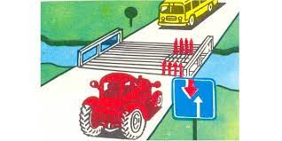
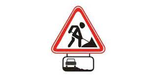
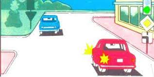
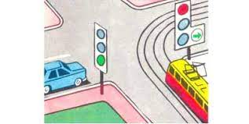
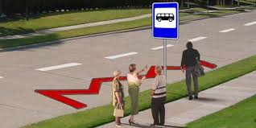
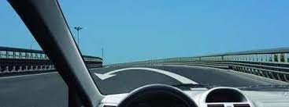
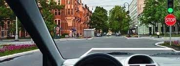
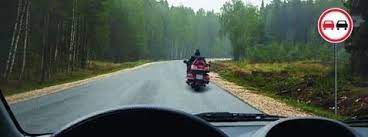
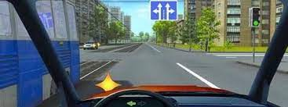
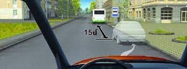

Թեստ 30
30:00
1. «Ճանապարհային երթևեկության անվտանգության ապահովման մասին» ՀՀ օրենքի համաձայն` թույլատրելի առավելագույն զանգված է համարվում`
2. "Ճանապարհային երթևեկության անվտանգության ապահովման մասին" ՀՀ օրենքի համաձայն՝ B, C, D կարգերի և C1, D1 ենթակարգերի տրանսպորտային միջոցներ վարելու իրավունքի վկայական ունեցող անձանց թույլատրվում է դրանք վարել նաև կցորդներով, եթե կցորդի թույլատրելի առավելագույն զանգվածը չի գերազանցում`
3. Տրանսպորտային միջոցների շահագործումն արգելվում է, եթե`
4. Տրանսպորտային միջոցների շահագործումն արգելվում է, եթե՝
5. Ո՞ր տրանսպորտային միջոցի վարորդը պետք է զիջի ճանապարհը:

6. Ինչի՞ մասին են զգուշացնում այս նշանը և ցուցանակը:

7. Կապույտ ավտոմոբիլը խաչմերուկը կանցնի`

8. Ո՞ր տրանսպորտային միջոցի վարորդը պետք է զիջի ճանապարհը:

9. Ի՞նչ է նշանակում տվյալ ճանապարհային գծանշումը:

10. Գտնվելով կամրջի սահմաններում թույլատրվո՞ւմ է հետադարձը

11. Պարտավոր եք արդյո՞ք կանգ առնել «Կանգ-գծի» առջև

12. Թույլատրվո՞ւմ է վազանց կատարել այս իրավիճակում

13. Տրանսպորտային միջոցների երթևեկությունը բնակավայրերում թույլատրվում է`
14. Ընդհանուր օգտագործման տրանսպորտային միջոցների վարորդների կողմից ձայնային ազդանշանները կարող են կիրառվել`
15. Թույլատրվու՞մ է արդյոք վարորդին շարունակել երթևեկությունը լուսացույցի դեղին ազդանշանը միանալու կամ կարգավորողը ձեռքը բարձրացնելու դեպքում:
16. Աջ շրջադարձ կատարելիս
17. Ձախ շրջադարձը կատարելիս

18. Կայանումը նշված վայրում
